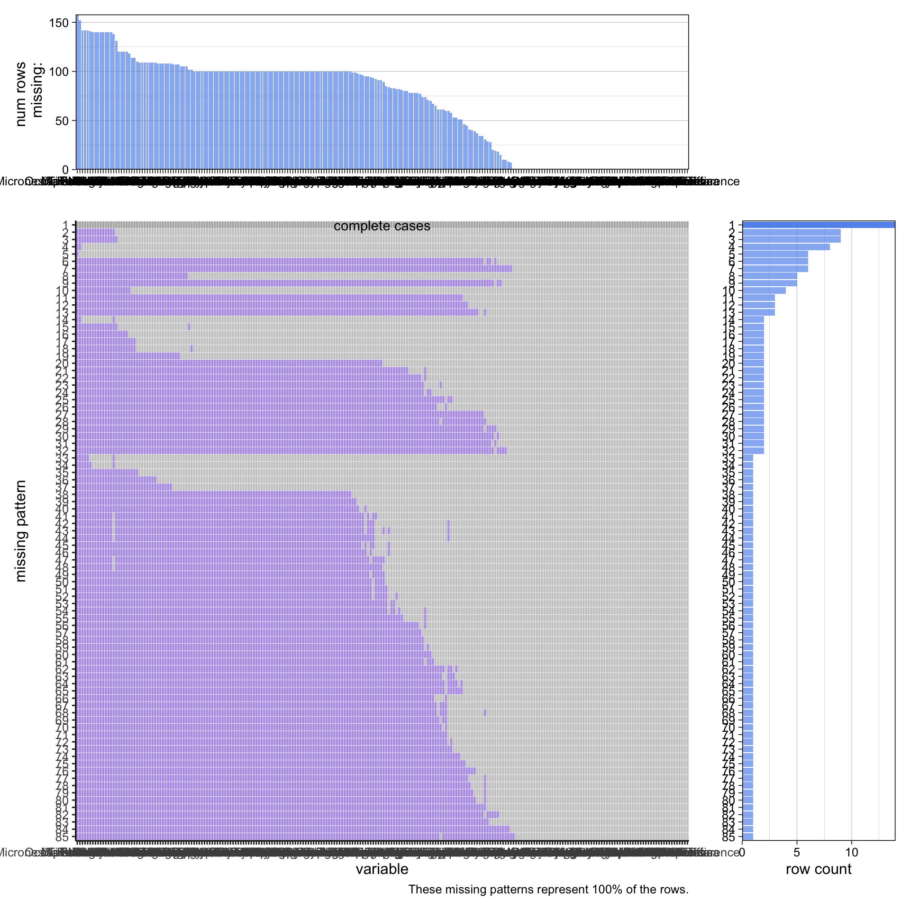
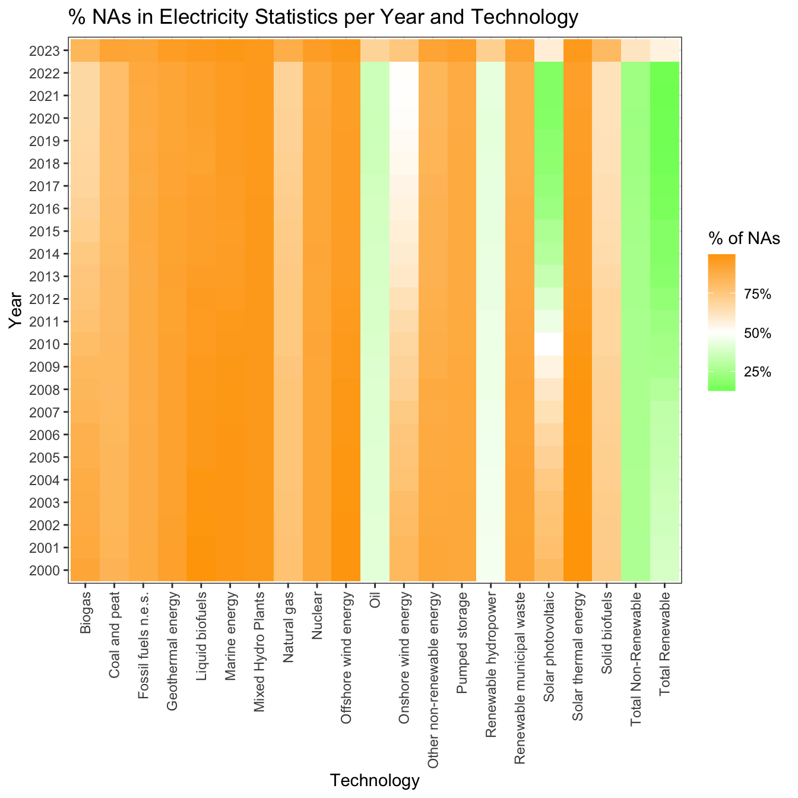

International Renewable Energy Agency (IRENA) Link: https://www.irena.org/Data/Downloads/IRENASTAT (link to IRENA data query tool)
The data is collected by the international renewable energy agency IRENA from its member countries. IRENA is an intergovernmental organization that exists to support country’s with their transition to using sustainable energy. There are currently 169 member countries and the EU. IRENA is able to collect their data through their questionnaire for these member countries. In addition, desk research is also conducted to complement the questionnaire to provide a comprehensive report. IRENA updates its database annually.
There is a data query on the IRENA website for us to look at data related to heat generation or electricity generation in general. There is also data that looks at sustainable energy as a percentage of overall energy generation of all the member countries. We are able to select these data through a data query on the IRENA website. The data query allows us to download data directly in excel or csv format. To import the data, we will download the data as a csv file and load it in to R with read.csv() function. The data is in wide format that is sorted by countries, then by different groups of indicators (% wind generation, etc.), and finally by yearly data (this is consistent across the data we found using the data query). It has data starting from the 2000s to 2023 (previous year).
Global Carbon Project (GCP) Link: https://www.icos-cp.eu/science-and-impact/global-carbon-budget/2022
The data is collected by the Global Carbon Project. The GCP is an international research project that aims to understand patterns and interactions connected to Global Carbon emissions. They are able to collect their data by working with different institutions and consolidating their observations. The data should be updated yearly to the previous year we are currently on eg. (2023 as we are in 2024 right now). However, this data is not available yet, so it might be a potential problem when we perform our data analysis. In addition, there are also a few countries that doesn’t have any data which we will have to deal with.
We are able to download data directly on the global carbon budget website. The data contains information on global carbon emissions data as well as emissions of fossil fuels by country. The website allows us to download the information as an excel sheet. We can use the read.xlsx() function to read in and process these excel files into R. The data is sorted by countries/years with data information situated on top of the actual data. There are also multiple sheets within an excel file.
2.2 Missing value analysis
2.2.1 Electricity statistics (MW/GWh) by Region, Technology, Data Type and Year
Code
# load librarieslibrary(tidyverse)library(data.table)# read raw filedf_electstats_region <-read_csv("./raw_data/irena_electstats_region.csv")attr(df_electstats_region, 'spec') <-NULL# review data structuredf_electstats_region |>str()
# assess data sampledf_electstats_region |>arrange(`Electricity statistics`) |>head() |>data.table()
Region Technology Data Type Year
<char> <char> <char> <num>
1: World Total renewable Electricity Generation (GWh) 2023
2: World Solar energy Electricity Generation (GWh) 2023
3: World Wind energy Electricity Generation (GWh) 2023
4: World Hydropower (excl. pumped storage) Electricity Generation (GWh) 2023
5: World Marine energy Electricity Generation (GWh) 2023
6: World Bioenergy Electricity Generation (GWh) 2023
Electricity statistics
<char>
1: -
2: -
3: -
4: -
5: -
6: -
We observe that Electricity statistics column is saved as character. In particular, some rows have value equal “-”, we label them as NA and convert the column to numeric.
# review proportion of NAs per column: globaldf_electstats_region|>summarise(across(everything(),~sum(ifelse(is.na(.x),1,0)) ),n=n() ) |>pivot_longer(cols=-n,names_to ='variable',values_to ='n_na' ) |>mutate(prop_na=n_na/n) |>data.table()
n variable n_na prop_na
<int> <char> <num> <num>
1: 5760 Region 0 0.0000000
2: 5760 Technology 0 0.0000000
3: 5760 Data Type 0 0.0000000
4: 5760 Year 0 0.0000000
5: 5760 Electricity statistics 619 0.1074653
Only Electricity statistics column presents NAs, less than 11% of the total observations.
Let’s review the pattern by Year
Code
# review proportion of NAs by Yeardf_electstats_region_year <- df_electstats_region |>group_by(Year) |>summarise(n =n(),n_country =n_distinct(`Region`),across(starts_with('Elect'),~sum(ifelse(is.na(.x),1,0)) ) ) |>rename(n_na=starts_with('Elect')) |>mutate(prop_na=n_na/n)# graph share of NAs in Electric Statistics per Yeardf_electstats_region_year |>ggplot(aes(x=Year,y=prop_na)) +geom_line() +theme_bw() +ggtitle('% NAs in Electricity Statistics per Year') +scale_y_continuous('% NAs',labels=scales::percent_format())
In general, we observe a downtrend across years but year 2023 where there’s a big jump.
Let’s assess whether % of NAs depend on which Technology is measured
Code
# review proportion of NAs by Year and Technologydf_electstats_region_year_tec <- df_electstats_region |>group_by(Year,Technology) |>summarise(n =n(),across(starts_with('Elect'),~sum(ifelse(is.na(.x),1,0)) ) ) |>rename(n_na=starts_with('Elect')) |>mutate(prop_na=n_na/n)
`summarise()` has grouped output by 'Year'. You can override using the
`.groups` argument.
Code
# % share of NAs per by Year and Technologydf_electstats_region_year_tec |>mutate(Year=factor(Year)) |>ggplot(aes(x=Technology,y=Year,fill=prop_na)) +geom_tile() +scale_fill_gradient2("% of NAs",low='green',mid='white',high='orange',midpoint =0.5,labels=scales::percent_format() ) +theme_bw() +ggtitle('% NAs in Electricity Statistics\nper Year and Technology') +theme(axis.text.x =element_text(angle =90, vjust =0.5, hjust=1))

Most Technologies have 0% of NAs.Geothermal, Other non-renewable and Pumped Store have around 15% of NAs. Marine and Nuclear has the most share of NAs with over 25%.
Let’s analyze regions, could some regions more prone to missing values?
Code
# review proportion of NAs by Year and Regiondf_electstats_region_year_r <- df_electstats_region |>group_by(Year,Region) |>summarise(n =n(),across(starts_with('Elect'),~sum(ifelse(is.na(.x),1,0)) ) ) |>rename(n_na=starts_with('Elect')) |>mutate(prop_na=n_na/n) |>mutate(Region =case_when(str_detect(Region,'Central') ~'Central America',TRUE~ Region ))
`summarise()` has grouped output by 'Year'. You can override using the
`.groups` argument.
Code
# graph % NA per Year and Countrydf_electstats_region_year_r |>ggplot(aes(x=Year,y=prop_na,col=Region))+geom_line(position =position_jitter()) +theme_bw() +ggtitle('% NAs in Electricity Statistics per Year and Region') +scale_y_continuous('% NAs',labels=scales::percent_format()) +scale_color_discrete(breaks=~.x[!is.na(.x)]) +theme(legend.position="bottom")
In the first years, Middle East is the region with most NAs (<40%). Around 2014 we see an improvement for this region. We add jitter to observe the pattern for regions with least share of missing values. In particular Asia, Europe, Eurasia and North America have small shares of NAs (<5%).
Again, we assess some type of issue with data on 2023 due to an increase of shares of missing values.
2.2.2 Electricity statistics (MW/GWh) by Country/area, Technology, Data Type, Grid connection and Year
Code
# read datadf_electstats_country <-read_csv("./raw_data/irena_electstats_country.csv")attr(df_electstats_country, 'spec') <-NULL# review data structuredf_electstats_country |>str()
# assess data sampledf_electstats_country |>arrange(`Electricity statistics (MW/GWh)`) |>head() |>data.table()
Country/area Technology Data Type Grid connection
<char> <char> <char> <char>
1: Afghanistan Solar photovoltaic Electricity Generation (GWh) All
2: Afghanistan Solar photovoltaic Electricity Generation (GWh) All
3: Afghanistan Solar photovoltaic Electricity Generation (GWh) All
4: Afghanistan Solar photovoltaic Electricity Generation (GWh) On-grid
5: Afghanistan Solar photovoltaic Electricity Generation (GWh) On-grid
6: Afghanistan Solar photovoltaic Electricity Generation (GWh) On-grid
Year Electricity statistics (MW/GWh)
<num> <char>
1: 2000 -
2: 2001 -
3: 2002 -
4: 2000 -
5: 2001 -
6: 2002 -
Again Electricity statistics column is saved as character. In particular, some rows have value equal “-”, we label them as NA and convert the column to numeric.
Only Electricity statistics column presents NAs, around 75% of the total observations.
Let’s review the pattern by Year
Code
# review proportion of NAs by Yeardf_electstats_country_year <- df_electstats_country |>group_by(Year) |>summarise(n =n(),n_country =n_distinct(`Country/area`),across(starts_with('Elect'),~sum(ifelse(is.na(.x),1,0)) ) ) |>rename(n_na=starts_with('Elect')) |>mutate(prop_na=n_na/n)# graph share of NAs in Electric Statistics per Yeardf_electstats_country_year |>ggplot(aes(x=Year,y=prop_na)) +geom_line() +theme_bw() +ggtitle('% NAs in Electricity Statistics per Year') +scale_y_continuous('% NAs',labels=scales::percent_format())
The share of missing values present a downtrend but on year 2023 there’s a sudden jump up to 85%.
Let’s assess whether % of NAs depend on which Technology is measured
Code
# review proportion of NAs per by Year and Technologydf_electstats_country_year_tec <- df_electstats_country |>group_by(Year,Technology) |>summarise(n =n(),across(starts_with('Elect'),~sum(ifelse(is.na(.x),1,0)) ) ) |>rename(n_na=starts_with('Elect')) |>mutate(prop_na=n_na/n)
`summarise()` has grouped output by 'Year'. You can override using the
`.groups` argument.
Code
# % share of NAs per by Year and Technologydf_electstats_country_year_tec |>mutate(Year=factor(Year)) |>ggplot(aes(x=Technology,y=Year,fill=prop_na)) +geom_tile() +scale_fill_gradient2("% of NAs",low='green',mid='white',high='orange',midpoint =0.5,labels=scales::percent_format() ) +theme_bw() +ggtitle(paste0('% NAs in Electricity Statistics',' per Year and Technology') ) +theme(axis.text.x =element_text(angle =90, vjust =0.5, hjust=1))
For most Technologies we have big shares of missing values (>50%). For Solar energy we the share decreases across time. Just for Oil and aggregated values such as Total Non-Renewable and Total Renewable the share of NAs is below 50% consistently.
Let’s analyze for grid connection
Code
# review proportion of NAs per by Year and Grid connectiondf_electstats_country_year_grid <- df_electstats_country |>group_by(Year,`Grid connection`) |>summarise(n =n(),across(starts_with('Elect'),~sum(ifelse(is.na(.x),1,0)) ) ) |>rename(n_na=starts_with('Elect')) |>mutate(prop_na=n_na/n)
`summarise()` has grouped output by 'Year'. You can override using the
`.groups` argument.
Code
# % share of NAs per by Year and Grid connectiondf_electstats_country_year_grid |>mutate(Year=factor(Year)) |>ggplot(aes(x=`Grid connection`,y=Year,fill=prop_na)) +geom_tile() +scale_fill_gradient2("% of NAs",low='green',mid='white',high='orange',midpoint =0.5,labels=scales::percent_format() ) +theme_bw() +ggtitle(paste0('% NAs in Electricity Statistics',' per Year and Grid Connection') ) +theme(axis.text.x =element_text(angle =90, vjust =0.5, hjust=1))
Regardless of the grid connection the share of missing value is high (>60%)
For which countries do we have most data?
Code
# review proportion of NAs per by Year and Countrydf_electstats_country_year_country <- df_electstats_country |>group_by(Year,`Country/area`) |>summarise(n =n(),across(starts_with('Elect'),~sum(ifelse(is.na(.x),1,0)) ) ) |>rename(n_na=starts_with('Elect')) |>mutate(prop_na=n_na/n) |>mutate(Country=ifelse(prop_na<0.5,`Country/area`,NA)) |>mutate(Country =str_remove_all(Country,'\\(the\\)')) |>mutate(Country =case_when(str_detect(Country,'United Kingdom') ~'UK',str_detect(Country,'United States') ~'US',str_detect(Country,'Korea') ~'South Korea',str_detect(Country,'Viet Nam') ~'Vietnam',TRUE~ Country ))
`summarise()` has grouped output by 'Year'. You can override using the
`.groups` argument.
Code
# graph % NA per Year and Country# color countries with %NAs < 50%df_electstats_country_year_country |>ggplot(aes(x=Year,y=prop_na,group=`Country/area`,col=Country))+geom_line(position=position_jitter()) +theme_bw() +ggtitle('% NAs in Electricity Statistics per Year and Country') +scale_y_continuous('% NAs',labels=scales::percent_format()) +scale_color_discrete(breaks=~.x[!is.na(.x)]) +theme(legend.position="bottom")
Highlighting countries which share of NAs is less than 50% only 12 met this criteria out of 200+ countries.
2.2.3 Renewable energy share of electricity capacity and generation (%) by Region/country/area, Indicator and Year
Code
# read datadf_share <-read_csv("./raw_data/irena_share.csv")attr(df_share, 'spec') <-NULL# review data structuredf_share %>%str()
spc_tbl_ [11,184 × 4] (S3: spec_tbl_df/tbl_df/tbl/data.frame)
$ Region/country/area : chr [1:11184] "World" "World" "World" "World" ...
$ Indicator : chr [1:11184] "RE share of electricity generation (%)" "RE share of electricity generation (%)" "RE share of electricity generation (%)" "RE share of electricity generation (%)" ...
$ Year : num [1:11184] 2000 2001 2002 2003 2004 ...
$ Renewable energy share of electricity capacity and generation (%): chr [1:11184] "18.31" "17.82" "17.76" "17.29" ...
- attr(*, "problems")=<externalptr>
Code
# assess data sampledf_share |>arrange(`Renewable energy share of electricity capacity and generation (%)`) |>head() |>data.table()
Region/country/area Indicator
<char> <char>
1: World RE share of electricity generation (%)
2: Africa RE share of electricity generation (%)
3: Asia RE share of electricity generation (%)
4: Central America and the Caribbean RE share of electricity generation (%)
5: Eurasia RE share of electricity generation (%)
6: Europe RE share of electricity generation (%)
Year Renewable energy share of electricity capacity and generation (%)
<num> <char>
1: 2023 -
2: 2023 -
3: 2023 -
4: 2023 -
5: 2023 -
6: 2023 -
This data requires the same transformation as with previous sets. Only difference is that it includes region and country/area. Let’s split data an analyze separately. Let’s start examining by region
Code
# convert renewable column to numeric# divide pct by 100df_share <- df_share|>mutate(across(starts_with('Renewable'),~ifelse(.x=='-',NA,.x) ) ) |>mutate(across(starts_with('Renewable'), as.numeric ) ) |>mutate(across(starts_with('Renewable'),~.x/100 ) )# has countries and regions together split c_names <- df_share$`Region/country/area`|>unique()# by regiondf_share_region <- df_share |>rename(Region=`Region/country/area`) |>filter(Region %in% c_names[1:10])# review proportion of NAs per column: globaldf_share_region |>summarise(across(everything(),~sum(ifelse(is.na(.x),1,0)) ),n=n() ) |>pivot_longer(cols=-n,names_to ='variable',values_to ='n_na' ) |>mutate(prop_na=n_na/n) |>data.table()
n variable
<int> <char>
1: 480 Region
2: 480 Indicator
3: 480 Year
4: 480 Renewable energy share of electricity capacity and generation (%)
n_na prop_na
<num> <num>
1: 0 0.00000000
2: 0 0.00000000
3: 0 0.00000000
4: 10 0.02083333
In this case just 2.3% of data is missing. Let’s review the pattern if we group by Year
Code
# review proportion of NAs by Yeardf_share_region_year <- df_share_region |>group_by(Year) |>summarise(n =n(),n_country =n_distinct(Region),across(starts_with('Renewable'),~sum(ifelse(is.na(.x),1,0)) ) ) |>rename(n_na=starts_with('Renewable')) |>mutate(prop_na=n_na/n)# graph share of NAs in Renewable per Yeardf_share_region_year |>ggplot(aes(x=Year,y=prop_na)) +geom_line() +theme_bw() +ggtitle(paste0('% NAs in Renewable energy share of',' electricity capacity \nand generation per Year')) +scale_y_continuous('% NAs',labels=scales::percent_format())

In this case this 2.3% is explained due to 2023 not having any value for this dataset. Hence if we exclude this year our data at a regional level has no missing values.
Let’s assess our data at a country-level
Code
# at position 11 starts countriesdf_share_country <- df_share |>rename(`Country/area`=`Region/country/area`) |>filter(`Country/area`%in% c_names[11:length(c_names)])# review proportion of NAs per column: globaldf_share_country |>summarise(across(everything(),~sum(ifelse(is.na(.x),1,0)) ),n=n() ) |>pivot_longer(cols=-n,names_to ='variable',values_to ='n_na' ) |>mutate(prop_na=n_na/n) |>data.table()
n variable
<int> <char>
1: 10704 Country/area
2: 10704 Indicator
3: 10704 Year
4: 10704 Renewable energy share of electricity capacity and generation (%)
n_na prop_na
<num> <num>
1: 0 0.00000000
2: 0 0.00000000
3: 0 0.00000000
4: 1051 0.09818759
In this case, the data set have ~10% of missing values
Again, let’s review whether this is explained just by Year
Code
# review proportion of NAs group by Yeardf_share_country_year <- df_share_country |>group_by(Year) |>summarise(n =n(),n_country =n_distinct(`Country/area`),across(starts_with('Renewable'),~sum(ifelse(is.na(.x),1,0)) ) ) |>rename(n_na=starts_with('Renewable')) |>mutate(prop_na=n_na/n)# graph share of NAs in Electric Statistics per Yeardf_share_country_year |>ggplot(aes(x=Year,y=prop_na)) +geom_line() +theme_bw() +ggtitle(paste0('% NAs in Renewable energy share of',' electricity capacity \nand generation per Year')) +scale_y_continuous('% NAs',labels=scales::percent_format())
In this case there are missing values in different years with a downtrend and a spike on 2023.
Let’s assess how missing values are with Year and Indicator column
Code
# review proportion of NAs per by Year and Indicatordf_share_country_year_ind <- df_share_country |>group_by(Year,Indicator) |>summarise(n =n(),across(starts_with('Renewable'),~sum(ifelse(is.na(.x),1,0)) ) ) |>rename(n_na=starts_with('Renewable')) |>mutate(prop_na=n_na/n)
`summarise()` has grouped output by 'Year'. You can override using the
`.groups` argument.
Code
# % share of NAs per by Year and Indicatordf_share_country_year_ind |>mutate(Year=factor(Year)) |>ggplot(aes(x=Indicator,y=Year,fill=prop_na)) +geom_tile() +scale_fill_gradient2("% of NAs",low='green',mid='white',high='orange',midpoint =0.5,labels=scales::percent_format() ) +theme_bw() +ggtitle(paste0('% NAs in Renewable energy share of electricity capacity',' \nand generation per Year and Indicator')) +theme(axis.text.x =element_text(angle =90, vjust =0.5, hjust=1))
Aside from 2023, missing value share for Indicator is below ~25% across time.
After seeing this we would expect a lot of countries to have values in the metric of interest. Let’s visualize how the share of countries that have less than a certain threshold of missing values.
Code
# review proportion of NAs per by Year and Countrydf_share_country_year_c <- df_share_country |>group_by(Year,`Country/area`) |>summarise(n =n(),across(starts_with('Renewable'),~sum(ifelse(is.na(.x),1,0)) ) ) |>rename(n_na=starts_with('Renewable')) |>mutate(prop_na=n_na/n) |>mutate(flag=ifelse(prop_na<0.5,1,0)) |>group_by(Year) |>summarise(less_50_na=sum(flag)/n())
`summarise()` has grouped output by 'Year'. You can override using the
`.groups` argument.
Code
# share of countries that meet criteriadf_share_country_year_c |>ggplot(aes(x=Year,y=less_50_na))+geom_line() +theme_bw() +ggtitle(paste0('% of countries with less than 50% of NAs',' in Renewable energy share of \nelectricity capacity',' and generation per Year') ) +scale_y_continuous('% NAs',labels=scales::percent_format())
For this particular dataset from the 200+ countries above 75% of them have less than 50% of missing values. Unlike the first dataset we can do an analysis at region as well at country-level.
2.2.4 Public Investments (2021 million USD) by Country/area, Technology and Year
Code
# read datadf_finance <-read_csv("./raw_data/irena_finance.csv")attr(df_finance, 'spec') <-NULL# review data structuredf_finance |>str()
spc_tbl_ [98,532 × 4] (S3: spec_tbl_df/tbl_df/tbl/data.frame)
$ Country/area : chr [1:98532] "Afghanistan" "Afghanistan" "Afghanistan" "Afghanistan" ...
$ Technology : chr [1:98532] "On-grid Solar photovoltaic" "On-grid Solar photovoltaic" "On-grid Solar photovoltaic" "On-grid Solar photovoltaic" ...
$ Year : num [1:98532] 2022 2021 2020 2019 2018 ...
$ Public Investments (2021 million USD): num [1:98532] 0 0 0 4.38 48.17 ...
- attr(*, "problems")=<externalptr>
Code
# assess data sampledf_finance |>arrange(`Public Investments (2021 million USD)`) |>head() |>data.table()
Country/area Technology Year
<char> <char> <num>
1: Afghanistan On-grid Solar photovoltaic 2022
2: Afghanistan On-grid Solar photovoltaic 2021
3: Afghanistan On-grid Solar photovoltaic 2020
4: Afghanistan On-grid Solar photovoltaic 2015
5: Afghanistan On-grid Solar photovoltaic 2011
6: Afghanistan On-grid Solar photovoltaic 2009
Public Investments (2021 million USD)
<num>
1: 0
2: 0
3: 0
4: 0
5: 0
6: 0
For finance data we don’t have a special string to inform about missing data. In this case, the lowest value is cero.
Let’s analyze whether this dataset has missing values or not.
Code
# review proportion of NAs per column: globaldf_finance |>summarise(across(everything(),~sum(ifelse(is.na(.x),1,0)) ),n=n() ) |>pivot_longer(cols=-n,names_to ='variable',values_to ='n_na' ) |>mutate(prop_na=n_na/n) |>data.table()
n variable n_na prop_na
<int> <char> <num> <num>
1: 98532 Country/area 0 0
2: 98532 Technology 0 0
3: 98532 Year 0 0
4: 98532 Public Investments (2021 million USD) 0 0
For finance data it looks like no missing values are reported.